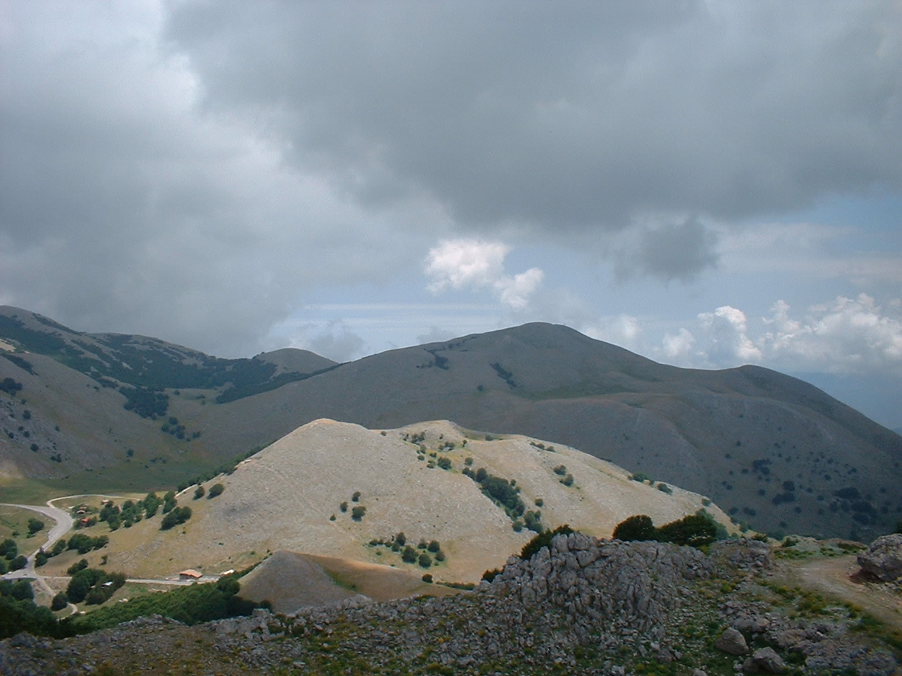

Monte Spina Puci

ITALIANO - Rilievo caratterizzante la “soglia” che divide la depressione di “Piano Battaglia” da quella della “Battaglietta”. Sagomato da una faglia avente direzione Nord‐ est/Sud‐ovest è costituito da calcari giura‐cretacei, riccamente fossiliferi, della scogliera Panormide. (Giura – Cretaceo)
ENGLISH - Characteristic relief of the “threshold” that divides the depression of “Piano Battaglia” from that of “Battaglietta”. Shaped by a fault with North East/South West direction consists of jura cretaceous limestone, richly fossiliferous, of the Panormide cliff. (Giura- cretaceo)